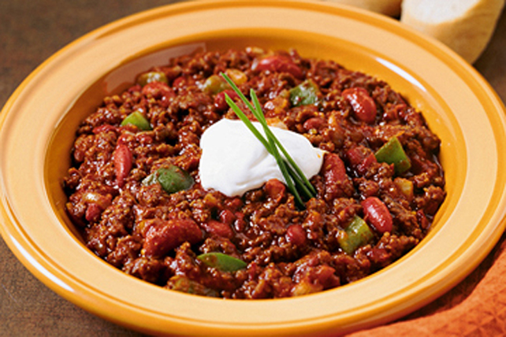

My stepmom's delicious Chili con Carne
Ingredients for one big pot of Chili
- 1kg minced meat
- 3 red bell peppers
- 1 green bell pepper
- 2 bags chopped tomatoes
- 5 onions
- 3-4 fresh red pepperonis
- 2 tablespoons clarified butter
- 100g tomato paste
- 1 tin of kidney beans
- 1 tin of corn
- 1 cup of sour cream
- 1 teaspoonvegetable stock
- Salt, cayenne pepper, paprika, basil, cinnamon
Instructions
- Dice the bell peppers, onions and pepperonis
- Heat clarified butter
- Steam the onions until transparent
- Add the tomato paste and roast briefly
- Brown the minced meat well, then season it with salt and basil
- Add the bell peppers, chopped tomatoes, pepperonis, kidney beans and corn, stir in the vegetable stock and let it simmer together
- Season to taste with salt, cayenne pepper, paprika, sour cream and cinnamon
- Serve with baguette and butter, if you like, and enjoy!